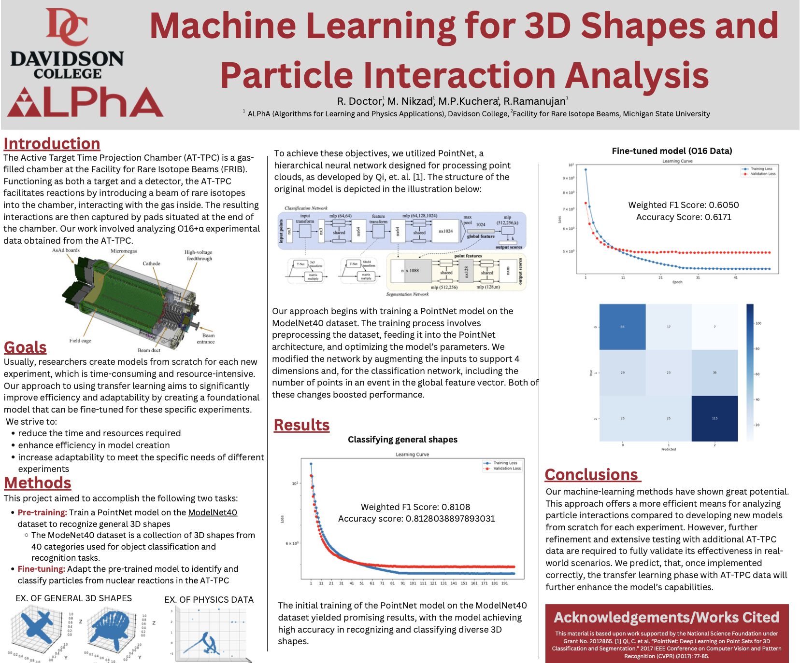

Deep Learning with PointNet for 3D Nuclear Physics Data
Algorithms for Learning in Physics Applications (ALPhA) | Davidson College & Facility for Rare Isotope Beams (FRIB)
View Project Poster
×

We worked with a special chamber called the AT-TPC, which is used to study how rare atomic particles interact. The chamber produces 3D “maps” of these interactions. Our goal was to teach a computer to recognize patterns in these 3D maps using a type of machine learning called PointNet.
What we did:
- Train a model on 3D shapes: First, we taught the computer to recognize general 3D objects like chairs, tables, and airplanes.
- Fine-tune on physics data: Then, we adapted this model to identify patterns in particle collisions from the AT-TPC. This approach saved a lot of time because we didn’t have to start from scratch.
Results:
- The model worked well on general 3D shapes, classfiying about 81% of the objects correctly.
- On the particle data, it correctly classified about 62% of events, which is a good start for this kind of complex data.
- Our approach shows that computers can help scientists analyze particle collisions more efficiently.
Why it matters:
- Less data is needed to train models.
- We save time and resources.
- The model can be adapted to study new experiments easily.
May 2024 - July 2024
Reproducing and Evaluating USGS Predictive Models for E. Coli at Great Lakes
Beaches
CSC 371 Machine Learning | Davidson College
Links:
View Project Paper (PDF) |
GitHub
Swimming in lakes can be risky if there are high levels of E. coli bacteria.
Traditional testing takes 18–24 hours, so we reproduced USGS models that estimate
bacteria levels quickly using environmental data.
What we did: Recreated USGS models in Python, then checked how well our
predictions matched official results.
Key insights: Turbidity, rainfall, and water temperature are the most influential predictors.
Models performed well on training data and allow faster, safer public health decisions.
Why it matters: Accurate, real-time predictions help public health officials issue same-day advisories,
keeping swimmers safe. It also highlights environmental inequities.
September 2025 - October 2025
Predicting Cancer Diagnoses Using Patient miRNA Data
CSC 371 Machine Learning | Davidson College
Links:
View Project Paper (PDF) |
GitHub
What we did:
- Combined miRNA data from six cancer types into a single dataset.
- Trained three machine learning models: SVM, Random Forest, and Neural Network.
- Handled rare cancer types with class weighting and applied data transformations to improve accuracy.
Results:
- Random Forest: 96.9% accuracy (highest)
- Neural Network: 96.7% accuracy
- SVM: 95% accuracy
- Identified key miRNAs (like hsa-mir-21) as strong predictors.
Why it matters:
- Helps doctors diagnose cancer faster and more accurately.
- Supports personalized treatments based on cancer type.
- Shows potential of AI tools to assist (not replace) human expertise.
October 2025 - November 2025
Predict the Yik: Modeling Engagement on Davidson’s YikYaks
CSC 371 Machine Learning | Davidson College
Links:
View Project Paper (PDF) |
GitHub
What we did:
- Collected posts from Davidson’s YikYak and Reddit for modeling engagement.
- Preprocessed text, normalized engagement features, and engineered linguistic, sentiment, temporal, and burstiness metrics.
- Trained Logistic Regression, Linear SVM, and Random Forest classifiers to predict high-engagement posts.
- Addressed class imbalance using undersampling, class-weighted loss, and balanced ensemble methods.
- Deployed the Logistic Regression model in a Streamlit web app for practical demonstration.
Results:
- Predicting high engagement on YikYak was harder than on Reddit because engagement is less consistent and more influenced by short-term community activity.
- Models were good at identifying low-engagement posts (most predictions of low engagement were correct).
- Models often missed high-engagement posts or falsely flagged low-engagement posts as popular.
- Logistic Regression performed the best overall, capturing some signals of high engagement, but still struggled with the rarer, highly engaging posts.
- Reddit was easier: posts with high engagement were much more predictable, likely because engagement patterns are more stable and linear.
Why it matters:
- Helps understand what drives engagement on local social media platforms.
- Highlights limitations of text-only models in anonymous, hyper-local communities.
- Demonstrates how behavioral signals can be modeled and applied for moderation, research, or community insights.
November 2025 - Present
Heirloom of the Sky – 2D Narrative Exploration Game
DIG 250 Game Development | Davidson College
Link:
Google Drive
Genre: Single-player adventure/puzzle
Pitch: Guide the last heirloom of a lost city in the sky as it journeys through a mysterious tower to restore the wind and uncover forgotten stories. Explore layered environments, solve puzzles, and meet lingering spirits in a calm, reflective world where wind is both guide and tool.
Audience: Fans of contemplative, story-driven, and visually immersive games like Journey or Monument Valley.
Gameplay: Move through levels, solve environmental puzzles, interact with objects, and navigate wind-driven challenges. Collect items carefully, as they affect movement and difficulty.
Visual & Audio Style: Geometric parallax visuals, layered color themes, and gentle string-based music with environmental wind sounds for guidance.
November 2025 - Present